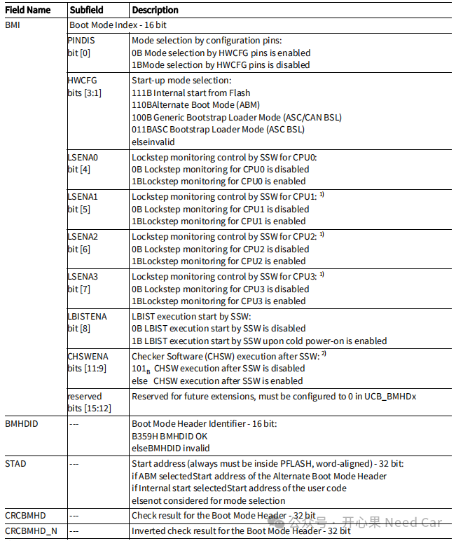

开心果 Need Car · 2024-10-13T18:08:00+08:00 · 微信原文
不管是软件开发工程师还是软件测试工程师。刷写程序、调试程序是日常工作必不可少的部分。对于大多数工程师来说，刷写Application程序、Bootloader程序或者Calibration数据并不陌生，但是刷写UCB（User Configuration Block，用户配置块）的操作相对较少。那么，如何刷写UCB呢？使用Lauterbach更新UCB，又如何编写对应的刷写脚本呢？
提示：基于TC3xx讨论
1、什么是UCB
UCB也就是用户配置块，即：根据用户的配置决定芯片的一些启动行为，比如：从哪个地址进入用户程序、是否启用HSM（Hardware Security Module）等等。用户的这些信息由Firmware程序检查，进而决定软件的启动行为。
2、如何基于Lauterbach刷写UCB
既然UCB这么重要，所以，在刷写UCB时，我们需要格外的小心。UCB属于非易失内存区。每个UCB都有其对应的Struct，所以，更新UCB可以只更新特定数据区，也可以整个更新。
比如，Boot Mode Header (BMHD) structure如下所示：

3、使用Lauterbach更新UCB内容的三种方式
具体操作的视频讲解如下：
对应的脚本示例如下：
; Enable flash programmingFLASH.ReProgram.ALL&HSMCOTP0_BaseAddress=0xAF402800 ;UCB20 HSMCOTP0 ORIG Base AddressFLASH.CHANGEtype 0xAF402800--0xAF4029FF TARGETFLASH.AUTO 0xAF402800--0xAF4029FF;enable HSM 0x01, enable wait function 0x03，disable wait function 0x01Data.Set &HSMCOTP0_BaseAddress+0x18 %Long 0x1FLASH.AUTO.offFLASH.CHANGEtype 0xAF402800--0xAF4029FF NOP; Finally program flash memoryFLASH.ReProgram.off
（二）以UCB块为单位更新
对应的脚本示例如下：
;UCB20 HSMCOTP0 ORIGFLASH.CHANGEtype 0xAF402800--0xAF4029FF TARGET;UCB28 HSMCOTP0 COPYFLASH.CHANGEtype 0xAF403800--0xAF4039FF TARGETFLASH.AUTO 0xAF402800--0xAF4029FFFLASH.AUTO 0xAF403800--0xAF4039FFData.LOAD.AUTO ../enable_HSM_0x80004000.hexFLASH.AUTO.offFLASH.CHANGEtype 0xAF402800--0xAF4029FF NOPFLASH.CHANGEtype 0xAF403800--0xAF4039FF NOP
; Enable flash programmingFLASH.ReProgram.ALL;UCB AREAFLASH.CHANGEtype 0xAF400000--0xAF405FFF TARGETFLASH.AUTO 0xAF400000--0xAF405FFFData.LOAD.AUTO C:/Users/xin.song4/Desktop/ReleaseHSMHex/enable_HSM_0x80004000.hexFLASH.AUTO.offFLASH.CHANGEtype 0xAF400000--0xAF405FFF NOP; Finally program flash memoryFLASH.ReProgram.off
往期精彩回顾